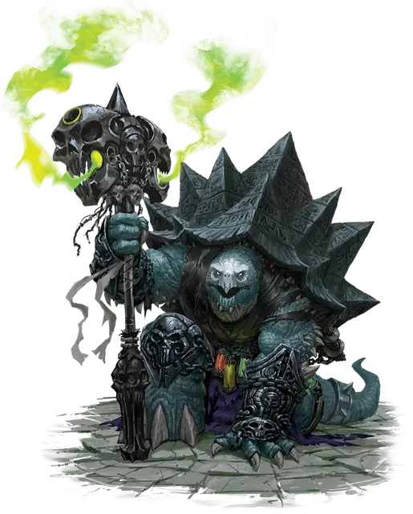

Крулл
Krull
Средний Гуманоид (Тортл), законно-злой, именной НИП

Класс Доспеха 17 (природный доспех)
Хиты 117 (18к8 + 36)
Скорость 30 футов
| мод | спас | ||
|---|---|---|---|
| СИЛ | 20 | +5 | +5 |
| ЛОВ | 14 | +2 | +2 |
| ТЕЛ | 15 | +2 | +2 |
| мод | спас | ||
|---|---|---|---|
| ИНТ | 12 | +1 | +1 |
| МДР | 20 | +5 | +8 |
| ХАР | 12 | +1 | +4 |
Навыки Выживание +8, Магия +4, Медицина +8, Природа +4
Чувства пассивное Восприятие 15
Языки Общий, Акван, Драконий
Опасность 6 (2300 опыта)
Бонус мастерства +3
Особенности
Задержка дыхания. Крулл может задерживать дыхание на 1 час.
Неизбежное разрушение. Урон некротической энергией, наносимый заклинаниями Крулла, игнорирует сопротивление урону некротической энергией.
Использование заклинаний. Крулл является заклинателем 14-го уровня. Его базовой характеристикой является Мудрость (Сл спасброска от заклинания 16, +8 к попаданию атаками заклинаниями). У Крулла подготовлены следующие заклинания жреца:
• Заговоры (неограниченно): леденящее прикосновение [chill touch], починка [mending], сопротивление [resistance], священное пламя [sacred flame], уход за умирающим [spare the dying], чудотворство [thaumaturgy];
• 1 уровень (4 ячейки): лечение ран [cure wounds], обнаружение зла и добра [detect evil and good], псевдожизнь [false life], нанесение ран [inflict wounds], луч болезни [ray of sickness];
• 2 уровень (3 ячейки): глухота/слепота [blindness/deafness], нетленные останки [gentle repose], удержание личности [hold person], луч слабости [ray of enfeeblement], божественное оружие [spiritual weapon];
• 3 уровень (3 ячейки): восставший труп [animate dead], магический круг [magic circle], разговор с мёртвыми [speak with dead], духовные стражи [spirit guardians], прикосновение вампира [vampiric touch];
• 4 уровень (3 ячейки): изгнание [banishment], усыхание [blight], защита от смерти [death ward], предсказание [divination], поиск существа [locate creature];
• 5 уровень (3 ячейки): преграда жизни [antilife shell], облако смерти [cloudkill], заражение [contagion], высшее восстановление [greater restoration];
• 6 уровень (1 ячейка): сотворение нежити [create undead], истинное зрение [true seeing];
• 7 уровень (1 ячейка): божественное слово [divine word], регенерация [regenerate];
Действия
Когти. Рукопашная атака оружием: +8 к попаданию, досягаемость 5 фт., одна цель. Попадание: 7 (1к4 + 5) колющего урона.
Молот +1. Рукопашная атака оружием. : +9 к попаданию, досягаемость 5 футов, одна цель. Попадание: 13 (2к6 + 6) дробящего урона плюс 9 (2к8) урона некротической энергией.
Панцирная защита. Тортл втягивается в панцирь, когда испытывает угрозу. Это даёт ему бонус +4 КД и преимущество на спасброски Силы и Телосложения. Пока он внутри панциря, тортл считается лежащим ничком, его скорость равна 0 фт. и не может быть увеличена, он совершает с помехой спасброски Ловкости, не может использовать реакцию и единственным действием, которым он может пользоваться, является бонусное действие для вылезания из панциря.
Описание
Тортлы – всеядные, черепахообразные гуманоиды с панцирями, покрывающими большую часть их тел.
У тортлов есть поговорка: «Мы носим наши дома на спине». Следовательно, тортл не долго остаётся на одном месте.
Рост взрослой черепахи около 6 футов, а её вес примерно от 450 до 500 фунтов. Самцы и самки практически схожи размерами и внешним видом.
Временные города. Поселения тортлов в основ- ном используются как нечто, вроде места собраний, где черепахи могут общаться друг с другом и незнакомцами. Тортлы не считают поселения ценными, чтобы защищать их ценой своей жизни, и они покидают поселения, когда уже не нуждаются в них.
Жизнь, полная странствий. Большинство тортлов любят смотреть, как живут другие существа и открывать для себя новые обычаи. Желание размножаться у них не появляется до конца своей жизни, и тортл может провести десятилетия вдали от своей родной земли, не чувствуя тоски по дому.
Тортлы рассматривают мир как место, где каждый день можно встретить новое чудо. Они живут ради шанса услышать лёгкий ветерок, вьющийся по пальмам, наблюдать за лягушкой, квакающей на листьях кувшинок, либо постоять в многолюдном рынке.